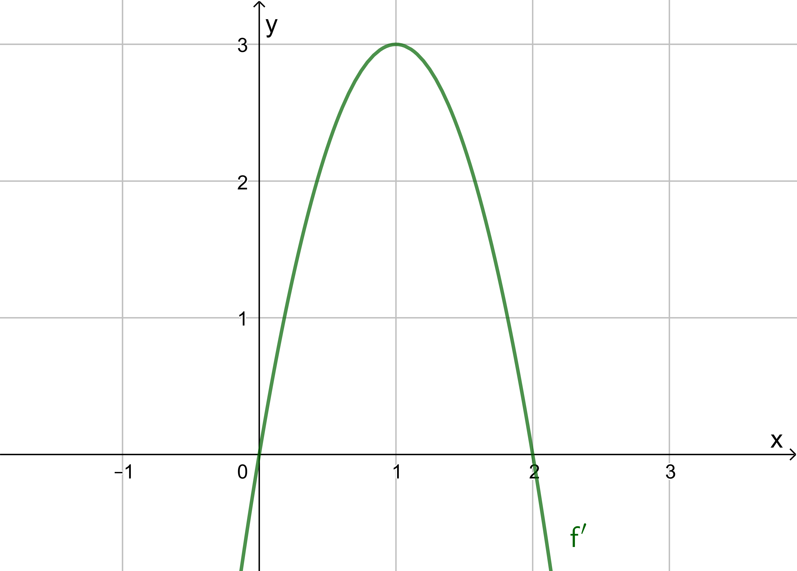
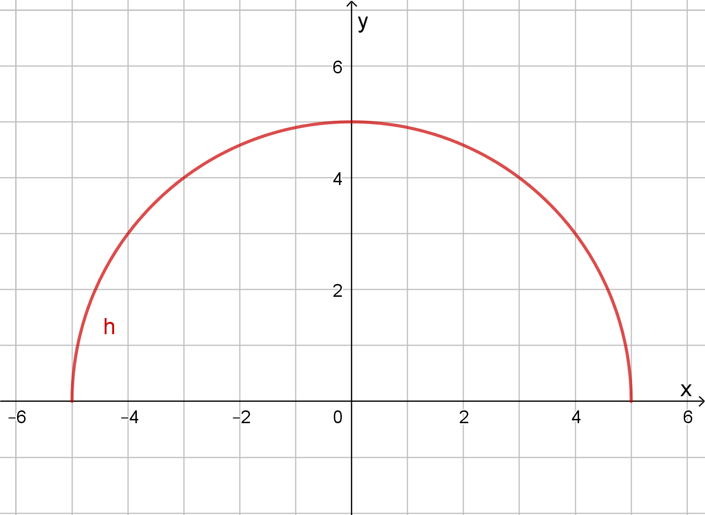

Avslutningsprøve Matematikk R1
Del 1
Oppgave 1
Deriver funksjonene
a) \(f(x) = 2x^3 -6x^2 +12\)
b) \(h(x) = \displaystyle\frac{e^x}{x}\)
Oppgave 2
Vi har gitt polynomet \[P(t) = t^3 - 3 t^2 - 6t +a.\]
a) Bestem \(a\) slik at \(P\) får nullpunktet \(t=1\).
b) Løs likningen \(e^{3x} - 3 e^{2x} - 6e^{x} + 8 = 0\).
Oppgave 3
Vektorene \(\vec{a}=\left[-3,4\right]\), \(\vec{b} = \left[-2, -7\right]\) og \(\vec{c} = \left[t+2, 3\right]\) er gitt der \(t \in \mathbb{R}\).
a) Bestem \(\vec{a}\cdot\vec{b}\).
b) Bestem \(t\) slik at \(|\vec{a}| = |\vec{c}|\).
Oppgave 4

Grafen over viser den deriverte av funksjonen \(f\).
a) Finn minimalpunktet og maksimalpunktet til \(f\).
b) Tegn en fortegnslinje for \(f''\) og bestem krumningen til \(f\).
c) Er det fra dette mulig å avgjøre om \(f\) har nullpunkter?
Oppgave 5
Skriv så enkelt som mulig.
\[\frac{x^2 + 3x + 2}{x^2 - 4} - \frac{x}{2x-4}\]
Oppgave 6
Figuren nedenfor viser en halvsirkel \(h\).

a) Forklar at \(h\) er grafen til funksjonen \(h(x)=\sqrt{25 - x^2}\).
b) Finn \(h'(x)\).
c) Vis at tangenten til \(h\) i punktet \(P(3,4)\) har likningen \(y = -\displaystyle\frac{2}{4}x + \frac{25}{4}\)
d) Finn skjæringspunktet mellom tangenten og \(x\)-aksen.
Et annet punkt \(Q\) på halvsirkelen har en tangent som skjærer \(x\)-aksen i punktet \(A(12,0)\). La \(O(0,0)\) være orgio.
e) Forklar at \(\Delta OAQ\) er rettvinklet.
Oppgave 7
Nedenfor er det gitt noen utsagn. Skriv av utsagnene. I boksen mellom utsagnene skal du sett inn ett av symbolene \(\implies\), \(\impliedby\) eller \(\iff\). Husk å begrunne svarene.
a) \(f(x) = x^2 - 3 \quad\Box\quad f'(x)=2x\)
b) \(\lg x^2 = 4 \quad\Box\quad x=100\)
Del 2
Oppgave 8
En kommune har 2000 personer med stemmerett, og på et tidspunkt vil 140 av disse stemme på Stenerpartiet (Sp).
I en spørreundersøkelse blir 25 personer med stemmerett trukket ut tilfeldig.
a) Finn sannsynligheten for at to av de spurte vil stemme Sp hvis vi bruker en hypergeometrisk sannsynlighetsmodell.
b) Finn sannsynligheten for at to av de spurte vil stemme Sp hvis vi bruker en binomisk sannsynlighetsmodell. Forklar hvilke tilnærminger vi gjør ved å regne binomisk.
c) Hvor stor relativ (prosentvis) feil gjør vi her hvis vi regner binomisk i stedet for hypergeometrisk?
Oppgave 9
Vi ser først på funksjonen \[f(x)=x^2+4.\]
a) Grafen til \(f\) har en tangent i punktet \((2,8)\). Vis at denne tangenten går gjennom origo.
Vi ser på funksjonen \[g(x)=k\cdot x^2 + 4,\quad k>0.\]
b) Bruk CAS til å finne punktene på grafen til \(g\) der tangentene går gjennom origo.
Oppgave 10
Peder og Rikke går på ski. De begynner klokka 12, og går i 3 timer. Peder sin rute er gitt ved: \[\vec{P}(t) = \left[5t - 13, 5t - 8\right], t\in \left[0, 3\right]\]
Rikke sin rute er gitt ved: \[\vec{R}(t) = \left[t^3 - 9t, t^2 - 4\right], t\in \left[0, 3\right]\]
For begge vektorfunksjonene er \(t\) tiden i timer og enheten på koordinataksene er kilometer.
a) Tegn skiløypene i samme koordinatsystem.
b) Finn posisjonen og fartsvektoren til Rikke når \(t = 0\).
c) Peder og Rikke møtes én gang i løpet av turen. Bruk CAS til å finne ut av hva posisjonen deres er da.
d) Skiløypene krysser et annet sted også. Finn tidspunktene da Peder og Rikke er i dette krysset.
e) Undersøk om Peder og Rikke går i samme retning noen gang i løpet av turen.